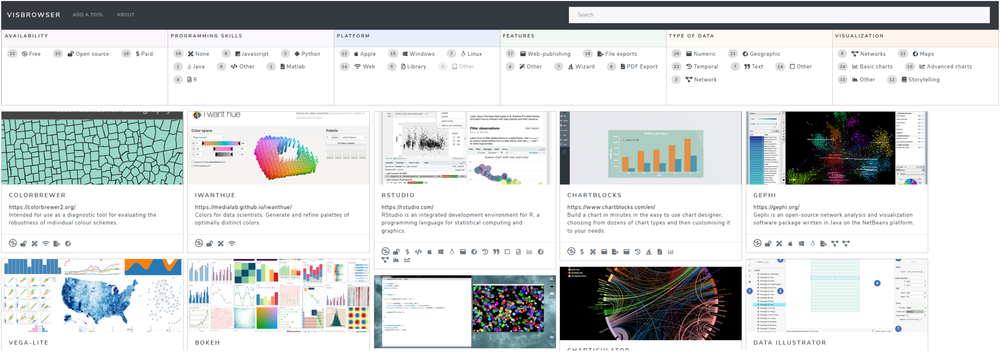

Benjamin Bach, PhD, HDR
Research Scientist
Inria, France
Bivwac team
200 Av. de la vieille Tour
33400 Talence, France
benjamin.bach@inria.fr
Google Scholar
LinkedIn
OrcID: 0000-0002-9201-7744
Full CV
Research & Bio
Publications
Teaching
Visualization Tools
Tools, in the form of editors with graphical user interface or as coding libraries, are indepensable for leveraging the full power of data visualization.
We build novel tools, often with interaction and openly available on the web. We create tools for specific data types (e.g., networks) and want to understand why certain tools are more successful and usable than others. How can we make them more useful? What problems do people encounter when trying to learn and use these tools?
We also collect tools from many authors on our VisTools browser.
People involved
- Benjamin Bach
- Arran Ridley
- Zezhong Wang
Publications


DataToon: Drawing Data Comics About Dynamic Networks with Pen + Touch Interaction Nam Wook Kim, Nathalie Henry Riche, Benjamin Bach, Guanpeng Xu, Matthew Brehmer, Ken Hinckley, Michel Pahud, Haijun Xia, Michael J. McGuffin, Hanspeter Pfister. ACM Conference on Human Factors in Computing Systems (CHI) (2019) [PAPER] [WEB] [VIDEO]